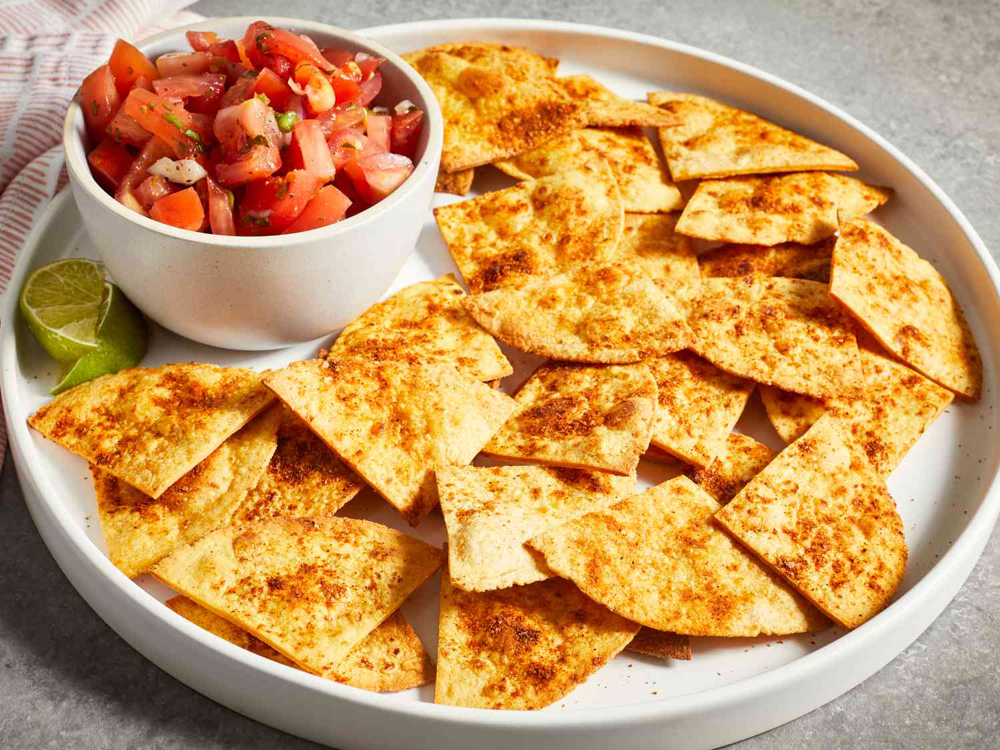

Tortilla chips

Description
Tasty tortilla chips baked at home with corn tortillas are much better than store-bought chips. With an amazing lime and cumin flavor, these crispy, golden chips taste great with your favorite salsa, gaucamole, or hummus.
Ingredients
- Tortillas
- Lime Juice
- Vegetable Oil
- Spices
Steps
- Cut the Tortillas: Cut the tortillas into triangles - you should be able to get about eight chips out of each tortilla.
- Season the Chips: Add lime juice and oil to a spray bottle and spray each chip. You can also brush the oil and lime juice mixture with a pastry brush. Sprinkle each chip with the spices.
- Bake the Chips: Bake the chips, flipping and re-seasoning halfway through. Make sure to check them offten so they don't burn.